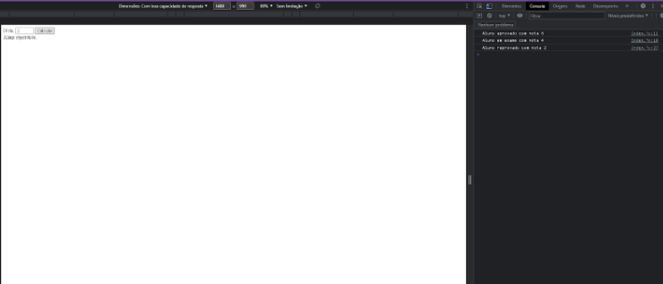

Javascript
Feito por : Arthur
Capítulo 3
O javaScript, ou ainda ECMAscript(Nome oficial), é uma linguagem de programação do tipo script que roda do lado do cliente.
Através de uma interface conhecida como DOM(Document Object Model), todos os elementos(tags) de um documento HTML podem ser manipulados como se fossem objetos, por meio do JS.

Logo da linguagem de programação Javascript
por que usar Javascript ?
O JS é utilizado como a linguagem de programação responsável por programar as interações que a página terá com os seus usuários, isto é, programar os comportamentos e atividades da página HTML.
Sem o uso de uma linguagem de programação para definir o comportamento da página, teríamos documentos estáticos que não enviam, nem recebem arquivos, somente, exibem conteúdo.
Básico Javascript
Tipos de aplicação do JS.
JS obstrutivo - quando o código em JS está misturado com o HTML
dificulta a manutenção e impossibilita o reuso do código
Imagem javaScript dentro de HTML
JS dentro da tag script
Permite o reuso do código e facilita a manutenção, mas não é o ideal
Imagem javaScript dentro de HTML
.obs: note que a função com o evento aler é chamada fora da tag script
JS não obstrutivo - separa, completamente, os documentos JS e HTML
Melhor prática, otimizando o código e se adequando aos motores de busca SEO(search engine optimization)
Para tanto, devemos acessar o DOM e identificar o objeto que representa nosso botão. Ele deverá receber o identificador (o atributo id no HTML) e seu objeto correspondente será localizado utilizando uma função chamada document.getElementById().
Essa função recebe como parâmetro o identificador do objeto e, se ela tiver sucesso, retorna o objeto correspondente. Para fins práticos, armazenaremos o objeto em uma variável (vamos falar mais sobre elas adiante!). Depois disso, basta chamar nosso evento onClick, dessa vez no JavaScript, de uma maneira bem peculiar
JS não obstrutivo
Ainda, resta separar os dois códigos em dois arquivos diferentes, como fizemos com o CSS. Basta mover os procedimentos JavaScript para um arquivo de extensão .js, e chamá-lo usando a mesma tag script, que ganha um atributo src (source):
JS não obstrutivo
.obs: Note que a tag script agora separa o documento de extensão chamado pelo atributo src="" do documento HTML.
Por boa prática, a tag script é incorporada no body se for preciso utilizar os elementos do body antes de carregá-la, senão, é inserida na head
JS não obstrutivo
Comandos de entrada e saída
prompt() - renderiza na tela uma mensagem uma mensagem. Utilizada como input para receber dados do usuário
window.alert() - mostra a saída de uma informação, para que já viu o básico de estruturas de saída de dados em python, essa função atua como um print() do dado recebido pelo prompt().
confirm() - gera um evento de confirmação para o usuário
Comandos de entrada e saida
obs. o uso do window não é obrigatório
Estruturas/Variáveis
Variáveis: são como vagas de um estacionamento dentro de um terreno.
As vagas são variáveis, elas armazenam conteúdo. O terreno é a memória, onde estão distribuídas as vagas. E os veículos que ocupam essas vagas são os dados, que podem ser de diferentes tipos como caminhões, carros, motos e da mesma forma, possuírem tamanhos diferentes, isto é, quanto maior a informação guardada, maior o espaço da vaga, maior o espaço que ocupará no terreno

variaveis javascript
As palavras reservadas var e let são atribuídas ao identificador da variável como uma espécie de declaração.
Obs. Identificador = nome da variável, no exemplo seguinte os identificadores são a1 e a2
variaveis javascript
>>>é lido que a variável a1 recebe o dado
armazenamento de dados
O JS é uma linguagem não tipada, diferentemente, de linguagens de tipagem forte, a declaração não é feita. Possui variáveis do tipo variant, isto é, Os container de formação irão assumir a forma do dado guardado.
Tipos primitivos:
Undefined:Indefinido é como o JavaScript expõe uma variável que foi declarada, mas não recebeu qualquer valor e, portanto, não assumiu nenhum tipo
Null:Isso acontece quando o valor null é literalmente atribuído à variável e ela está sem valor definido. Repare que é diferente de undefined; null é utilizado sempre que desejamos informar que a variável existe, mas ainda não possui um valor definido.
Boolean:Tipo lógico, permite armazenar valores como true (verdadeiro) e false (falso)
String: Cadeia de alfanuméricos; cada símbolo é armazenado em 16 bits no padrão UTF-16.
Number: Tipo numérico, sejam valores inteiros ou fracionados. São utilizados 64 bits por número, armazenados no padrão de dupla precisão estabelecido pelo IEEE.
Object: Tipo objeto, usado para armazenar objetos instanciados a partir de uma classe ou retornados por funções específicas.
Array: Utilizado quando for necessário armazenar mais de um valor simultaneamente, de qualquer tipo mencionado acima – possibilitando um array de números, de caracteres, de booleanos ou mesmo de objetos.
Conferindo o tipo de uma variant com typeof
variaveis javascript
Dicas para nomear uma variável em JS.
- .Podem começar com uma letra, $ ou _
- Não podem começar com números
- .O identificador pode ser constituído de letras ou números
- .é possível utilizar acentos e símbolos
- .não pode conter espaços
- .não podem ser constituídos de palavras reservadas como let ou var
Dicas na hora de utilizar variáveis
- letras maiúsculas e minúsculas fazem diferença, a linguagem interpreta como variáveis diferentes.
- A =
- a=
- sempre optar por nomes coerentes com o conteúdo
- aluno = “nome aluno”
- idade = idade
- evitar utilizar variáveis como n1, n2, n3 ou a,b,c
Operadores aritméticos e Funções matemáticas
Realizam operações matemáticas dentro do código.
- Símbolo “+”: possibilita operações de adição/soma.
- Símbolo “-”: possibilita operações de subtração.
- Símbolo “*” (asterisco): possibilita operações de multiplicação.
- Símbolo “/”: possibilita operações de divisão.
- Símbolo “%”: possibilita realizar divisões, recuperando o resto da divisão
Além dos operadores aritméticos tradicionais, temos alguns atalhos:
O nome da variável seguido de dois sinais de mais (variável++) significa um pós-incremento em um, ou seja, se variável=5, e na sequência, temos um comando como variável++, o valor contido na variável se torna 6.
Também é possível fazer um pós-decremento, ou seja, a variável-- fará o inverso, subtraindo um do valor da variável e armazenando o novo valor. As quatro operações básicas possibilitam outros atalhos para acúmulo de valores: o comando variável = variável + 5 pode ser escrito como variável += 5 5; trata-se apenas de uma forma reduzida de escrita, sendo assim, as duas linhas terão um mesmo resultado. Isso pode ser feito igualmente com subtração, multiplicação e divisão.

variaveis javascript
operadores aritméticos
O JavaScript conta com algumas funções matemáticas, para ser mais exato, alguns atributos e métodos estáticos da classe Math. Abaixo, segue uma relação com alguns deles:
Math.PI: retorna o valor de PI (aproximadamente 3,14). Math.E: retorna o número de Euler (aproximadamente 2,718). Math.LN2: retorna o logaritmo natural de 2 (aproximadamente 0,693). Math.LN10: retorna o logaritmo natural de 10 (aproximadamente 2,302). Math.ceil(x): arredonda o valor de x para cima. Math.cos(x): calcula o cosseno de x (x deve estar em radianos). Math.floor(x): arredonda o valor de x para baixo. Math.log(x): calcu Math.log(x): calcula o logaritmo de x (a base é o número de Euler). Math.pow(x,y): retorna o valor de x elevado a y. Math.random(): retorna um número aleatório entre 0 e 1. Math.round(x): arredonda o valor de x para cima ou para baixo, utilizando o que estiver mais próximo. Math.sin(x): calcula o seno de x (x deve estar em radianos). Math.sqrt(x): retorna a raiz quadrada de x. Math.tan(x): calcula a tangente de x (x deve estar em radianos).
Aplicação
funções matemáticas javascript
resultado funções matemáticas
Condicionais: if, if else, if aninhado , else if
As estruturas condicionais controlam o fluxo do código.Isto é, criam desvios para tomadas de decisões.
Analisando as estruturas utilizando exemplo de aluno aprovado, reprovado, ou em exame
If e if composto (else)
if e else javascript
if e else javascript
O exemplo utiliza uma condicional composta; isto é, possui um bloco else que trata a condição sendo falsa; o primeiro bloco é o tratamento tradicional, caso a condição seja satisfeita.
if aninhado
if aninhado
resultado if aninhado
Existe uma alternativa para essa estrutura: trata-se do uso de else if; é apenas um atalho, uma força menos encadeada de estrutura e mais rápida de se digitar, poupando um abre e fecha chaves.
Else if
else if javascript
else if javascript
switch
O JavaScript possui ainda o comando switch, que permite várias verificações de igualdade em uma única estrutura. O exemplo a seguir mostra seu funcionamento:
Switch javascript
Switch javascript
Estrutura de Repetição
While
funciona como uma condicional simples com repetição, enquanto a condição posta for verdadeira o loop é executado.
While javascript
do… while
sua única diferença é que a verificação da condição fica ao final do bloco e isso faz uma diferença crucial em relação ao while: temos a absoluta garantia de que o laço vai executar pelo menos uma única vez (diferente do while, que, se a condição não for satisfeita logo em seu início, não dá nem uma única volta sequer):
Do While javascript
obs. Note que mesmo a condição sendo falsa desde o início, o laço ainda executa um primeiro loop, passando o valor um na div de saída de dados
Texto em verde informa qual foi a alteração Texto em azul define quantas foram as alterações
for
É a preferida ao se construir laços como estes que usamos no exemplo, os chamados laços com número de voltas conhecido. Isso se deve ao fato de que essenciais (inicialização da variável, condição do laço e incremento da variável) ficam agrupados em uma única linha, minimizando as falhas ao se esquecer de um deles.
For javascript
For javascript
For of
Existe ainda, uma estrutura de laço específica para ser usada com arrays. O comando for.. of percorre automaticamente um array, do primeiro ao seu último elemento. Veja o exemplo a seguir:
For of javascript
For of javascript
extra
obs. segue código em python com loop for para análise e comparação com o uso do for..of nos array em JS
Pyton for
Python for
funções
As funções em JS saõ declaradas através da palavra reservada function seguida do nome da função e () { conteúdo ou procedimento que será executado com a chamada da função}
Função js
Programação orientada a eventos
Por ser uma linguagem muitas vezes utilizada do lado do cliente e, portanto, interpretada pelo navegador, o grande trunfo do JavaScript é a possibilidade de se programar por meio de eventos: podemos criar procedimentos que serão executados quando um determinado gatilho for acionado.
Os eventos mais comuns são aqueles disparados pelo próprio usuário, quando ele clica em algum elemento com o botão do mouse, quando ele digita alguma coisa ou quando um determinado elemento ganha foco. Entretanto, existem outros disparados por tempo ou por alguma funcionalidade HTML 5 que tenha sido previamente solicitada.
Já vimos o evento onclick sendo aplicado aos botões em exemplos anteriores, portanto, vamos a exemplos mais elaborados: o primeiro deles, um quadrado “desenhado” com CSS. Ao utilizar o evento onmouseover, mudamos sua cor de fundo quando o ponteiro do mouse passa por cima do elemento. O exemplo também exige um onmouseout, de forma que restauramos o fundo original da Figura “Exemplo de eventos onmouseover e onmouseout”, quando o ponteiro do mouse deixar o elemento:
Eventos js
mouse dentro do quadrado
mouse fora do quadrado
O exemplo seguinte é uma validação de um campo de formulário para CEP aplicada utilizando onblur, ou seja, quando o usuário termina de digitar a informação e deixa o campo. Além da tradicional mensagem de erro, trocaremos a cor da borda do campo para vermelho.
O evento onfocus também deve ser usado – afinal, quando o usuário volta ao campo para resolver o problema, devemos apagar as referências ao erro cometido: a mensagem de erro some e a borda volta à sua cor original:
Validação do cep ^[0-9]{5}\-[0-9]{3}$
DOM (Document Object Model)
Quando uma página web é carregada, o navegador cria um DOM da página. Essa estrutura é construída conforme o diagrama de objetos da imagem:
DOM
Essa estrutura DOM do HTML pode ser acessada através de linguagens de programação, como o JavaScript.
Nesta estrutura, todos os elementos do HTML são definidos como objetos e a interface de programação é a própria aplicação de métodos e propriedades em cada objeto(tag).
Uma propriedade é o valor que pode ser acessado ou passado, como alterar o conteúdo de uma tag HTML.
Um método é uma ação realizada no objeto como deletar ou adicionar uma tag
obs. veja que existe diferença em manipular ou acessar o conteúdo do objeto e adicionar ou deletar o objeto em si.
Concluindo, para acessar qualquer elemento HTML na página, é necessário começar acessando o documento do objeto dentro DOM. Portanto, seguem os métodos document.getElementBy.
Esse método pode utilizar do id, tag, ou classe do elemento HTML para acessá-lo:
DOM
Os métodos como document.getElementBy acessam o objeto, como esclarecido, todavia, para que o conteúdo do objeto possa ser alterado, é necessário utilizar propriedades.
A propriedade innerHTML é a maneira mais simples de acessar o conteúdo de qualquer elemento. Essa propriedade é útil para acessar ou substituir o conteúdo do elemento buscado pelo método document.getElementBy
Segue um exemplo de uso do document.getElementeById(“id”).innerHTML
Img retirada de www.w3schools.com
obs. Note que o método traz o objeto de id “demo” e altera seu conteúdo com a propriedade passada.